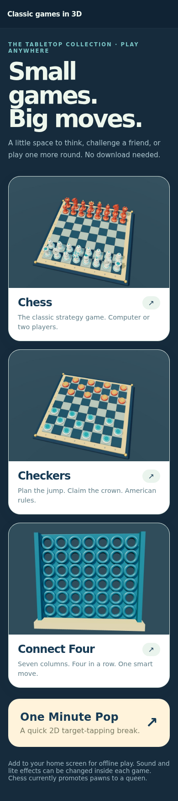
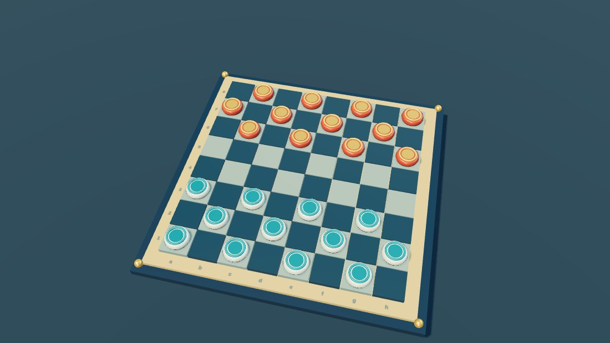
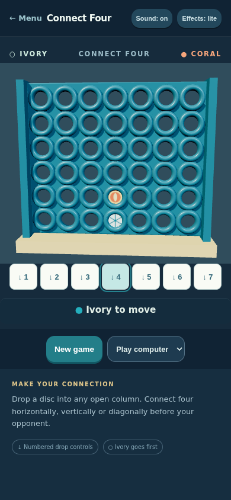

Classic board games in 3D, about 1,000 lines of JavaScript
Chess, checkers and Connect Four, each with a 3D board, running in the browser as one installable web app. No build step, no server code - every piece, texture and sound on the 3D boards is generated in code; the menu uses three preview images. The menu also has One Minute Pop, a small 2D tap game.

The code is on GitHub: https://github.com/ido-lempert/One-minute-pop - the three 3D games and their shared board code come to about 975 lines of JavaScript. The only libraries are three.js for rendering and chess.js for chess rules, both vendored.
Chess plays full rules through chess.js - legal moves, check, castling, en passant - verified against the standard perft counts (start position depth 3 = 8902; "Kiwipete" depth 2 = 2039). The computer opponent is a small alpha-beta search over material values, and it is weak. This is a toy you can beat, not an engine. Promotion always picks a queen.

Checkers follows American rules: forced captures, multi-jumps, kings, and promotion ends the move. The rules module survived 300 plies of computer self-play with every generated move legal, and a draw is declared after 40 plies with no capture and no man move (kings-only shuffling).

Connect Four drops discs into a 7x6 frame. Its computer searches five plies deep and is tested to take an immediate win and to block one. The rules tests cover horizontal, vertical and diagonal wins, full columns and a full board.

Chess and checkers share one 3D board module - ceramic-style pieces with a procedural kiln glaze, soft shadows, hop animations - where you drag to tilt the board, tap a piece and then a square. Connect Four builds its own three.js scene with a fixed camera: you play with the seven numbered column buttons below the board, or by tapping a column on the board itself. All three synthesise sound with Web Audio (mutable, and the setting is remembered). The site is set up as a PWA with a web manifest and a service worker that precaches the listed game files for offline use after the first visit. Actual home-screen installation and offline play after install have not been verified on a real device yet.
What this does not do: the computer play is basic in all three games and will not trouble a serious player. Chess promotion is always a queen. Testing is 32 node-based rules and controller regressions plus a scripted headless-Chrome pass at two window sizes; real-device behaviour (install, offline play, performance) has not been verified.